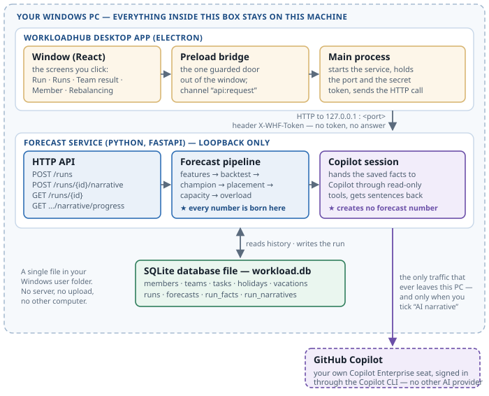
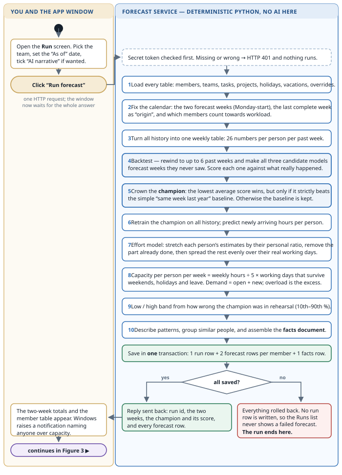
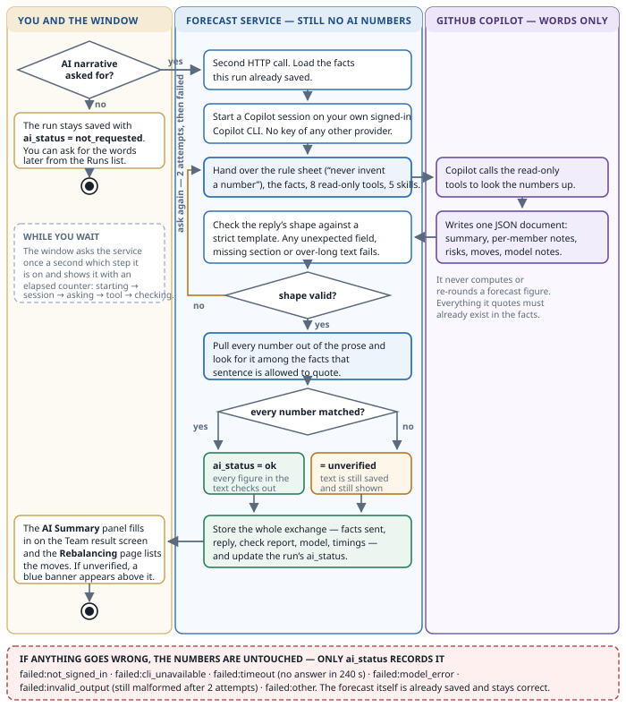
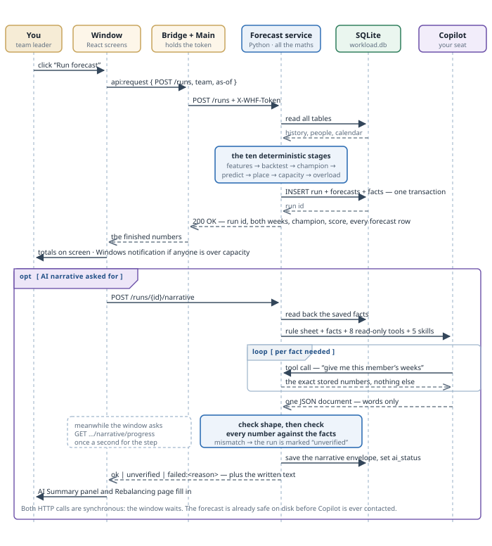
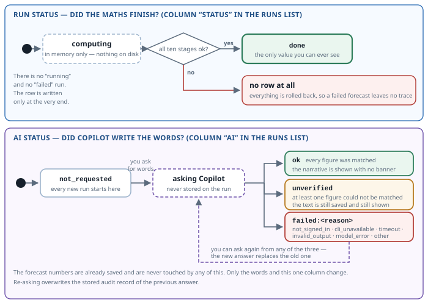
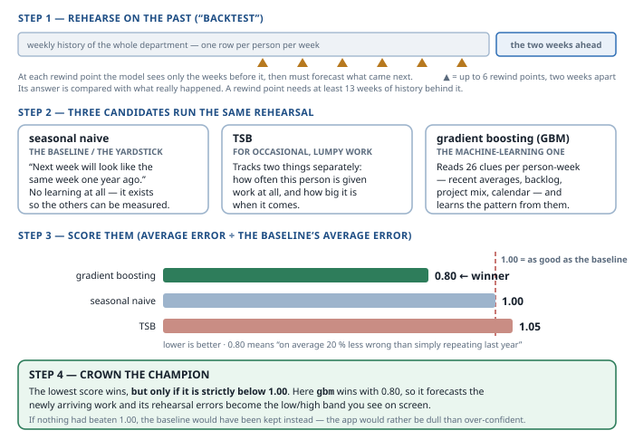
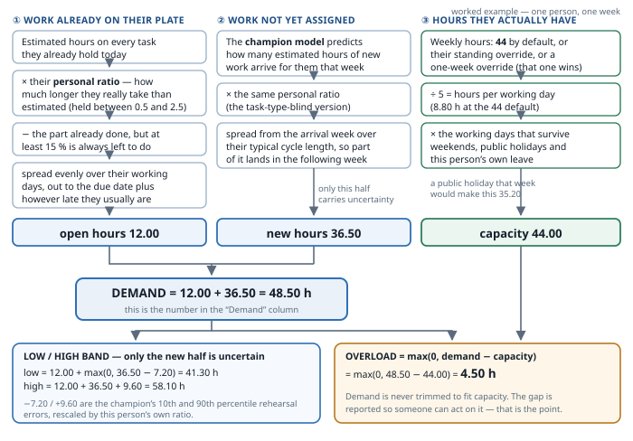
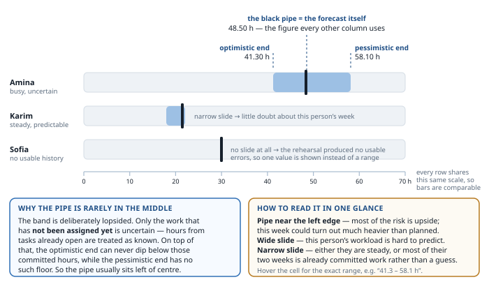
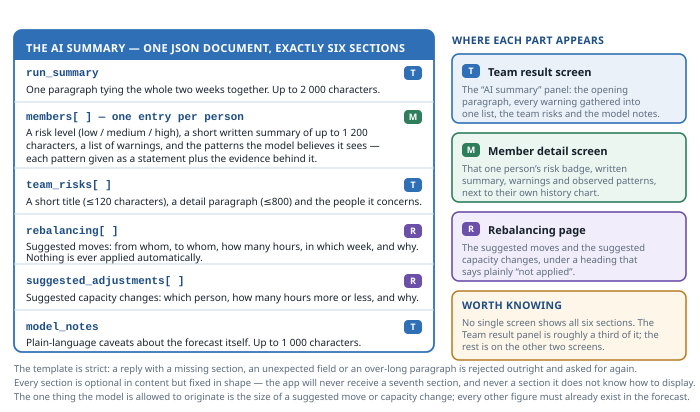
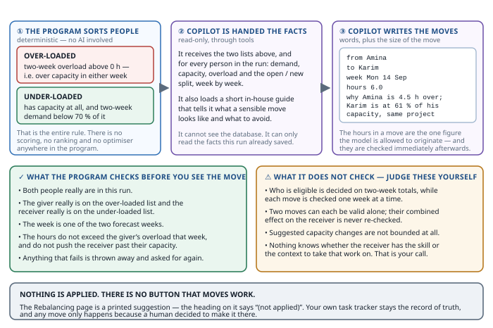

What the program calculates, what the AI writes, and how to read every number on the screen — explained without assuming you know the project.
This document answers eight questions about the Runs screens: what the "champion model" is, what happens between pressing Run forecast and seeing a result, why a run can be marked unverified, what "ask Copilot for the narrative" means, what the blue interval bar with the black pipe shows, what the AI Summary contains, how Rebalancing works, and what forecasting logic sits underneath all of it.
It contains ten diagrams. Each one is also supplied as UML source code (PlantUML and Mermaid) so it can be re-rendered, edited, or dropped into a slide deck.
One idea carries the whole document: the program produces every number; the AI only produces sentences, and is checked afterwards against the numbers.
| Question | Answered in |
|---|---|
| What is the "champion model", and what is this champion mechanic? | Section 7 (Figure 6) |
| A technical workflow diagram of everything that happens from clicking "run a forecast" to seeing a result | Sections 2–5 (Figures 1–4) and Appendix A, which contains the UML source code |
| Why is a run in Runs marked "unverified"? | Section 6 (Figure 5) |
| What does it mean to ask Copilot for the narrative? | Section 4 (Figure 3) |
| What is the interval field — the blue slide with a black pipe at a different position for each person? | Section 9 (Figure 8) |
| What does the AI Summary do, and what does each thing inside it represent? | Section 10 (Figure 9) |
| What does the Rebalancing section do, and how does it work? | Section 11 (Figure 10) |
| What reasoning logic, algorithms and models does the system use to forecast? | Sections 7 and 8 (Figures 6 and 7) |
Every section stands on its own — you can jump straight to the one you need. Sections 1 to 6 describe the process; sections 7 to 9 describe the maths; sections 10 and 11 describe what the AI writes. Section 12 is the honest list of limits, and is the section to read before making a staffing decision on the strength of a forecast.
In one sentence: it looks at how your team has worked in the past, estimates how many hours of work each person is likely to have over the next two weeks, compares that with the hours they are actually available, and tells you who is about to be overloaded.
Demand is never trimmed to fit capacity. If the arithmetic says a person is expected to have 61 hours of work in a 35-hour week, the app shows 61 hours and reports 26 hours of overload. It does not quietly cap the figure at 35 and pretend everything is fine. Making the problem visible is the entire point of the tool.
The application uses your own GitHub Copilot seat. It is important to be precise about what that means, because it is the single most common misunderstanding:
| Produced by ordinary program code | Produced by the AI |
|---|---|
| Every hour figure on every screen | Sentences |
| Demand, capacity, overload, the interval range | The explanation of why a pattern looks the way it does |
| Who is overloaded and who is underused | A written risk description for the team |
| Which forecasting model was chosen, and its score | Suggested moves of work between people |
| The history behind each person | Suggested changes to someone's available hours |
The two figures in the right-hand column — the size of a suggested move and the size of a suggested capacity change — are the only numbers the AI is allowed to originate, because they are proposals, not measurements. Every other number it writes must already exist in the saved facts, and the program checks that, sentence by sentence, before you are shown the text. Section 6 explains what happens when a number fails that check.
The people, projects and tasks in the current build are dummy data produced by a generator, not your real backlog. Everything in this document describes real, working machinery — but the specific numbers you see on screen today are not about your real team.
Every run covers exactly two weeks. If you run it on a Monday, those are this week and next week. On any other day, the current week is already partly spent, so the run covers the next two full weeks instead. There is no other horizon; the number cannot be changed from the screen.
Four pieces, and only one arrow that leaves your machine.

When — and only when — you ask for the narrative, the service sends Copilot the facts of that one run: the team's name, the members' names, their weekly hours, the overload figures, and thirteen weeks of history per person. The exact content of what was sent is stored back in the database next to the run, so it can be audited later. Nothing else, from any other team or any other run, is ever included.
…then nothing leaves the machine at all. The forecast is complete and fully usable without ever contacting Copilot. The AI is an optional layer of explanation on top of a finished result.
Ten stages, all of them ordinary arithmetic and statistics. No AI is involved in any of them.

The run row, the per-person figures and the fact sheet are written together or not at all. There is no half-saved run. This has one visible consequence: a failed forecast does not appear in the Runs list as a failed run — it does not appear at all. If you pressed the button and no new row showed up, the calculation did not complete.
The same database and the same date produce the same numbers, every time. There is no randomness in the pipeline, and nothing in these ten stages depends on a network connection, a subscription, or a model being available.
"Narrative" simply means the words — the paragraphs that explain the numbers you already have. Asking for it is a separate, optional, second step.

The model cannot browse your database. It can only call eight narrow, read-only lookups — "give me this member's two weeks", "give me the team totals", "give me this person's thirteen weeks of history", and so on. Each returns exactly the stored numbers and nothing else. It cannot write, delete, or reach outside this one run.
Nothing that goes wrong here can change a single forecast figure — the numbers were saved before Copilot was contacted. Only a status is recorded:
| Recorded reason | What it means in practice |
|---|---|
failed:not_signed_in | Your Copilot login has expired or was never completed. Sign in and ask again. |
failed:cli_unavailable | The Copilot command-line tool could not be started. |
failed:timeout | No answer within four minutes. Usually transient — ask again. |
failed:model_error | Copilot itself returned an error. |
failed:invalid_output | The answer never matched the required shape, twice in a row. |
failed:other | Anything else. |
A run saved without a narrative sits at not requested and can be narrated at any time from the Runs list. A run that already has one can be re-narrated. Re-asking replaces the stored record of the previous answer, so if you need to keep an earlier narrative for the record, copy it out first.
Figures 2 and 3 show what is computed. This one shows who talks to whom, and in what order — the view your engineers will recognise fastest.

The forecast service listens only on your own machine, and refuses any request that does not carry a token generated when the app started. Another program on your PC — or anything on your network — cannot read your workload data by talking to it.
The Runs list has two status columns and they mean completely different things. One is about the maths. The other is about the words.

In practice this column only ever reads done. There is no "running" and no "failed", because the row is written only at the very end, after every stage has succeeded. A run that failed leaves no row behind. So: if it is in the list, its numbers are complete and correct arithmetic.
| Value | Meaning |
|---|---|
| not requested | You have not asked for a narrative. The numbers are all there; there is simply no prose. This is the normal state of a fresh run. |
| ok | Every number the AI wrote was found in the run's own facts, in the right place. |
| unverified | At least one number in the prose could not be matched. The text is still saved and still shown in full, with an information banner above it. |
| failed:… | No narrative was produced at all. The reason is recorded — see the table in section 4. |
After the AI returns its text, the program reads back through every sentence, pulls out every number, and asks: does this figure exist in the facts that this particular sentence is allowed to quote? A note about Amina may quote Amina's hours; it may not quote Karim's. If one number cannot be matched, the run is marked unverified.
There are three realistic causes, and they are very different in seriousness:
It wrote 46.5 where the facts say 45.6, or rounded differently, or added two numbers together to produce a total that appears nowhere. This is the case the check exists to catch. Trust the table, not the sentence.
A perfectly genuine figure quoted under the wrong member, or described as capacity when it is demand. The check is deliberately strict about this, because a right number in the wrong place is exactly as misleading as a wrong number.
Whole numbers of 20 or less are skipped by the check unless written with an hours unit ("she has 5 tasks" is ignored; "5 h" is not), precisely so that counting words do not cause false alarms. But percentages, dates written unusually, or a figure quoted from a different week can still trip it. Not every unverified flag is an error of substance.
Unverified affects only the prose. It never affects a single number in the tables or charts. Treat it as: read this text more carefully, and check any figure it quotes against the table beside it. If it looks wrong, ask for the narrative again — the numbers stay exactly as they are.
This is the answer to "what is the champion mechanic". Short version: the app does not trust any one forecasting method. It makes three of them compete on your team's real history, and uses the winner.

The app rewinds the clock to a point in the past, hides everything after it, and asks each model to forecast the weeks that followed — which it can then mark, because it knows what actually happened. It repeats this at up to six rewind points, two weeks apart. "Up to" matters: a team with a short history gets fewer rewind points, and with less than about three months of usable history it gets none at all.
Each model gets one number. It is its average error divided by the baseline's average error, so:
| Score | Reading |
|---|---|
| 1.00 | Exactly as good as the naive baseline. |
| 0.80 | 20 % less error than the baseline. Good. |
| 1.15 | Worse than simply repeating last year. Rejected. |
Lower is better, and 1.00 is the line that matters. The winner — the champion — is the model with the lowest score, and it is what the Runs screen names.
If the best score is 1.00 or worse, no candidate has earned its place, and the app forces the choice back to the simple baseline. It would rather be predictably plain than confidently wrong.
Both the arrival model and the effort model are fitted on everyone in the database who counts toward workload, not just the team you are forecasting — then used to predict only that team. This is deliberate: it gives the models far more history to learn from, which matters most for small teams. The trade-off is that a team whose work is genuinely unlike the rest of the organisation is being forecast partly from other people's patterns.
Every demand figure in the product is the sum of exactly two things, compared against a third. This is that arithmetic, end to end.

For every unfinished task assigned to the person, the app has to answer two questions: how much work is left in it? and when will that work land?
New teams are not left without an answer: where there is not enough history, sensible defaults apply — a five-working-day cycle, and estimates trusted as written.
This is the champion model's output from section 7: the hours of new work this person is expected to pick up in each of the two weeks, based on the pattern of how work has reached them historically.
Capacity starts from a weekly figure — 44 hours by default — and is scaled by how many of that week's five working days the person is actually available:
capacity for the week = weekly hours × (available working days ÷ 5)
Example: 44 h/week, one public holiday and two days of vacation
→ 2 available days → 44 × 2 ÷ 5 = 17.60 hWeekends never count. Public holidays and approved leave are removed. Where several rules could apply, the most specific wins: an override for that exact week beats a standing override for that person, which beats the default.
44 h is the value the dummy data is seeded with, not a constant enforced at run time. Each person carries their own weekly hours, and part-time members are handled correctly. If a capacity figure looks wrong, the fix is in that person's record or in an override — not in a global setting.
demand = open hours + newly arriving hours (never capped)
overload = demand − capacity, or 0 if demand is smallerA person is listed as overloaded when their overload across the two weeks is above zero — any excess at all, no tolerance band. A person is listed as underused when they have capacity but their two-week demand is below 70 % of it.
Rounding. Each component is rounded to two decimals before being added, so a total can differ from the sum you would get by hand by about a hundredth of an hour. Irrelevant for decisions, occasionally visible in a table.
Work beyond the horizon. Open-task hours that would land after the second forecast week are simply not shown — they are outside the window. A person's total open workload can therefore be larger than the two-week demand figure suggests.
The blue bar is the range the forecast could plausibly fall in. The black pipe is the single figure the app is actually reporting. They are not always centred on each other, and that asymmetry is meaningful.

Because only half of the demand carries any uncertainty. Work already open and assigned is known — it is counted as fact. Only the newly-arriving half is a prediction, and only that half gets a range. So a person with a large open backlog and little incoming work has a narrow bar sitting near their demand figure, while a person whose week is mostly speculative gets a wide one. The ends are also allowed to be lopsided: history is often more capable of surprising you upwards than downwards.
From the rehearsal in section 7. The app kept every mistake the champion made during the backtest, then took the band that covers the middle 80 % of them — the 10th to the 90th percentile. That band is scaled to the individual by how far their own estimates have historically run from reality, and applied to the arriving half of their demand.
It means: 80 % of the errors this model made in rehearsal were inside this range. It is not a calibrated, statistically guaranteed 80 % confidence interval, it has never been tested against how often reality actually lands inside it, and it says nothing about the open-work half. Read it as a well-founded indication of steadiness, not as a probability you could bet on.
A collapsed bar — a single value, no range — means the rehearsal produced no usable errors to work from, usually because the history was too short to score. It is not a claim of perfect certainty; it is the absence of evidence. Nothing on the screen distinguishes the two cases, so treat a collapsed bar as unknown, not as exact.
The AI Summary turns a screen of tables into a short written briefing. It adds no information — it re-tells, in sentences, what the numbers already say, and points out what is worth your attention.

Every number in the prose has been matched against the run's own facts before you see it. When the panel reads ok, every figure it quotes is one the program itself calculated. That is a much stronger guarantee than a normal chatbot answer.
Only figures are verified. Causal claims — "because the Atlas migration landed" — are the model's interpretation, produced from the numbers alone. It does not know about your reorganisation, the customer who went quiet, or the person about to go on parental leave. Read the interpretations as a well-informed colleague's first reading, not as findings.
If the panel carries an unverified banner, section 6 explains what that means and what to do about it. The text is still shown in full — nothing is hidden from you.
The Rebalancing page suggests moving hours from people who are over capacity to people who have room. It is a discussion aid. It changes nothing.

| ✓ Checked by the program | ⚠ Not checked — your judgement |
|---|---|
| The source person is genuinely overloaded that week | Whether the receiving person can actually do that work |
| The receiving person genuinely has room that week | Whether the task can be handed over at all mid-flight |
| The hours moved do not exceed the room available | Client, security or contractual constraints |
| Both people are in this run | The cost of the handover itself |
| Every figure quoted exists in the facts | Leave, notice periods, anything not in the database |
The app does not solve an assignment problem or search for a best allocation. The two lists are arithmetic; the moves themselves are written by the language model and checked afterwards. Expect sensible, plausible suggestions — not a mathematically optimal plan, and not a complete one.
Each move is checked on its own, against the original figures. Three separate moves that each individually fit into the same person's spare capacity will each pass the check — and together will overload them. Look at the list as a whole before acting on any of it.
There is no button that moves work. No task is reassigned, no schedule changes, no one is notified. The page produces a list you can take into a conversation. Every re-run recomputes it from scratch.
This section exists so that nobody has to discover these things the hard way. None of it is a defect; all of it is a consequence of a deliberate design choice in version 1.
| Point | Why it matters |
|---|---|
| The champion score covers only arriving work | It says nothing about the accuracy of the open-work half, which is often the larger contributor to demand. |
| The reported score may be the baseline's, not the winner's | When the safety rule forces the fallback, the figure shown belongs to the baseline model. |
| Short history means a weak forecast | Fewer than about three months of usable weeks means no rehearsal at all — no scoring, and no interval range. |
| The interval is indicative, not calibrated | Nobody has measured how often reality lands inside it. Use the width to compare people, not as a probability. |
| A collapsed interval means "unknown", not "certain" | Nothing on screen distinguishes an absent range from a genuinely tiny one. |
| Work beyond week two is not shown | Open hours landing after the horizon are dropped from the figures. |
| Models are trained across the whole organisation | Good for small teams, less accurate for a team whose work is genuinely unlike everyone else's. |
| Unverified narratives are still shown in full | Deliberate — hiding text would hide the problem — but it means the banner must actually be read. |
| Re-narrating overwrites the previous audit record | Copy out a narrative you need to keep before asking again. |
| Rebalancing suggestions are not jointly validated | Individually valid moves can conflict when combined. |
| The suggested size of a move is not bounded | It is one of the two figures the model originates; sanity-check large ones. |
| The Team panel shows only part of the summary | The per-member notes and the moves live on the other screens; the panel alone is not the whole briefing. |
| A few screens still show English text in French mode | A known gap in version 1 — chart series names, some badges and status values. On the backlog. |
| "Today" is taken in UTC | Late in the evening in a positive-offset timezone, a run may date itself to tomorrow. Set the date explicitly if it matters. |
Six of the ten diagrams in this report are also supplied as UML source code, so they can be re-rendered, edited or embedded in a slide deck without redrawing anything.
The sources live beside this document, in the uml/ folder. Each diagram is
written twice — once in PlantUML (.puml) and once in Mermaid
(.mmd) — so whichever your team already renders will work.
| File | UML kind | What it shows |
|---|---|---|
01-architecture | Component / deployment | Where each piece runs, and the single arrow that leaves the machine (Figure 1) |
02-activity-forecast | Activity, 2 swimlanes | The ten deterministic calculation stages (Figure 2) |
03-activity-narrative | Activity, 3 swimlanes | The narrative request, and where unverified comes from (Figure 3) |
04-sequence | Sequence | The same run as messages between the six participants (Figure 4) |
05-state-machine | State machine | Every value the two status columns can hold (Figure 5) |
06-result-payload | Class | What a finished run actually contains — the shape behind every screen |
Open mermaid.live in a browser, paste the contents of any .mmd file, and
export SVG or PNG. This is the fastest route for a slide deck.
Paste a .puml file into the PlantUML web server. Note that this uploads the
diagram text to a public service — use a local render instead if that is not acceptable.
# PlantUML (needs Java)
winget install --id Oracle.JavaRuntimeEnvironment
java -jar plantuml.jar -tsvg *.puml
# Mermaid (needs Node)
npm install -g @mermaid-js/mermaid-cli
mmdc -i 04-sequence.mmd -o 04-sequence.svgVS Code: the PlantUML and Markdown Preview Mermaid Support extensions. JetBrains IDEs: the bundled Mermaid plugin, or PlantUML Integration. GitHub and GitLab render Mermaid directly inside fenced code blocks.
The ten figures in this report are hand-drawn vector graphics in diagrams/, so
that the report renders with no toolchain installed at all. They are not generated from
the UML sources. If you edit a .puml or .mmd, the matching figure in
this report does not update itself — and vice versa.